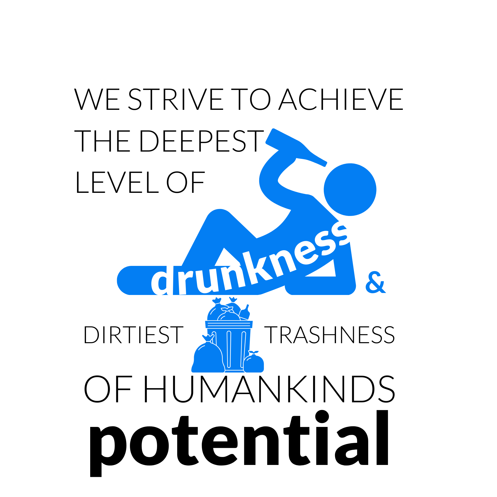

LC Népszínház Szervezeti és Működési Szabályzat

Hatályba lépett: 01/05/2023
Utols módosítás: 03/02/2024
- General thingies
1.1. The following organizational regulations, herein (lol, here, hehe XD) after referred to as "Írott Szar".
1.1.1. Updating Írott Szar is always the responsibility of those two drunk people, akiket be lehetett erre palizni. Noob-ok.
1.2. The purpose of this organization is to come together as a group of interest and elevate each other's mood while performing self-intoxicating activities in a racist, sexist, and generally hateful manner, especially towards nőnemű szőke cibbonyok.
1.3. Our vision is that: We strive to achieve the deepest level of drunkness and the dirtiest trashness of humankind's potential.
1.4. Our operational activities (herein after referred as Tájm ) include:
● Thematic drinking
● Non-thematic drinking
● Just simply drinking
● Accidental drinking
● *insert another faszságg here*
● Insulting bEach other
● Random tríp aka bécsi népszi
1.4.1 But must always include that we are szopkodni Márki’s Big Black Vízipipa.
1.4.1.1 In case of random tríp Márki’s Big Black Vízipipa can be subtituted by Soma’s Small White Manórúd
1.5 The organization was founded 24262 months lyézus utan by négy individuals who identified as filmesek, and one of these great individuals wanted to share a meme among friends.
The founding members ( hereinafter referred to as Őshonos ciintányérok) are:
- Kovi Flórián Producer Úr
- Operatőr Máté
- Hangmérnök Gábor
- Néger Pornósztár
These four dicks are kibaszottul maguknak valók, szóval se ki se be
- Membership
2.1. The organization membership roles include
- Őshonos ciintányérok
- Bevándorló kurvák
- Casual Brácsák
- Szőröstalpú románok
- Korlátolt Káré
2.2 Bevandorlo kurvák are those newcomer people who:
● Someone wanted to
● Someone wants to
● Someone will want to
fuck on the kitchen table.
2.3 Casual Brácsáknak azokat a személyeket nevezzük azokat a (jobb esetben férfi) személyeket, akiket bár megdugni senki nem akart, többségi szavazás alapján, teljes taggá avanzsáltunk.
2.4. Szőrőstalpú románok (egyszeri vendégek)
We identify people as román in the initial phase of LC Népszinhaz (except when the previous point is true ) when someone was invited but:
● Was a fucking bore
● Was too big of a pussy to drink
● Fucks your ex-fiancé *wink wink Márki (and Bálint)*
● Overly pc dermokrata faszok, aki szerint a nőknek van joga a szendvicskészitésen és a mosogatáson kivűl (a KoNyHáBAn!!!4!4!4!4!!)
● Azok a nyomorek közgázosok akik ahogy házhoz érnek telefont töltenek
● Azok akik nem hallgatnak központi hatalmat. Szégyen és gyalázat, még Orbán szerint is 😢
2.5. KK
2.6. Tájmba való meghivás menete:
2.5.1 Csak őshonos cintányérok legalább 50%-a hívhat meg valakit saját akaratából vagy pedig egy büdös kurva ajánlására
2.5.2 Be kell hívni naptár eseményre, és csak az elfogadás után hivatalos a a meghívás
2.5.2.1 Albert kiegészítés: amennyiben részegen haza cibalsz valakit a Tájmra, ez esetben a naptár esemény elengedhető, de a cintányér bele egyezés nem
- Voting and Rights
3.1. Fixed Voting rights:
3.1.1 Őshonos cintányérs posess the infinity stone of voting rights (mert mivel felsőbbrendű valamik, van joguk, köztük a birtoklás)
3.1.2 Szőrostalpú románok can never have a vote because Románia is just a legend and akinek szőrős a talpa, az borotvalja már le geci!!!
3.2. Telhes taggá valas feltetelei: (min
● Legalabb 3 Tájmon reszt vett es megtűrték, illetve *insert kizáró okok*
● Tagja a messenger csoportnak
● Valaki (kettő bevándorló migráns vagy egy cintányér) nominálja
● Egy olyan kvaliti télleg vicces
● nemsomavicces meme készitese es csoportba küldése
3.3. Telhes taggá válás menete, aka túl komplikált ivós NatCo:
- Ajánlas kérese es megszerzése
- Meme beküldése
- Az indulas fizikai jelzése: kötelessége egy, a társaság számára imponáló dalt elindítania a szeánsz ideje alatt általa valasztott időpontban, a kiválasztott zene alatt egy üveg kellemesen nemtudomilyen tömenyet prezentálnia illetve az üveg prezentálása közben segget felemelni üloalkalmatosságarol es elkiáltania HOGY “tag akarok lenni”
- Fél liter hosszú, szavazotagok altal kevert ital elfogyasztása (Roussian roulette)
-
Motivacios beszed eloadasa, melynek tartalmaznia kell: a társasághoz való csatlakozas fele érzett belső mély es komoly motivációt, beszéd közben vagy után a szándék bizonyitása KREATIV nagyon kreativ módon
-
Cintányér és kurvák zárdék: Nőnemu egyedek eseteben a jelentős vetkőzes elfogadott
- Fruzsinara nem vonatkozik, mert ő egy ribanc aki nem vetkőzik
-
Cintányér és kurvák zárdék: Nőnemu egyedek eseteben a jelentős vetkőzes elfogadott
- Shot lehuzasa (amit hozott)
- Szavazas elinditasakor az induló sisa füstot lélegez be, amelynek célja a szavazás végéig való benntartás, amennyiben ez nem sikerül, minden kilégzésnel shotot köteles fogyasztani mely alatt a szavazás szünetel
3.3.1 A szavazas eredménye után győzelmi vagy vereségi shot mindenkinek!!
3.4. Attendance es szavazati jog elvesztese
● Megszünhet: kizáraásal, a hal megevésével, lemondással (de az buzis)
● Automatikusan megszűnik HA: 3 alkalmat kihagy (kettő lehet véletlen három gáz), kétszer egymas után nem hoz piát (Levente záradék: hónap végén nem számit - hónap vege tárgyhó 25-től)
● Amennyiben megbaszod valaki exét (ejnye amugy geci Bálint ez kurva gáz)
- General Rules
● Minden alkalomra alkohol (értéke és eloszthatósága nagyobbegyenlő egy irsai oliver)
● Késni szabad, de nem Anett a pédda
● Tematikus este esetében a témára honestly es beleadóan kell készülni (aka vegyél fel jelmezt csicska)
● Bebaszni nem kötelező, de józanul maradni lehet a speciális esetben, melyről akkori közösség don't osztraikosszal (11.utan either way gáz)
● lC Nepszinhaz LCVM Tartasa havi negyszer javasolt, de ketszer kotelezo (vagy jön a cc, és Jani bezár minket a gecibe)
● Enyelgés visszafogandó
● Halasi Máté (herinafter referred as local sugardaddy - LCSD) cannot be lehúzva of his already low bigfour salary with more than 10% of his monthly received amount (mivel tudjuk hogy 6 MC tag legalább annyit keres mint ő)
● Szurmay Dominik (aka tapasztalt kopasz languszta) meghívása tilos és szAnKCIoKkAL JáR!!! (Dont do it, de tényleg plsa dont inkább felveszem a Halasi cicanadrágját)
● EB/MC/ECB/CC Pulcsi kint marad (ha fázol, felveheted, de nem buziskodunk,egymás felmelegitése preferred)